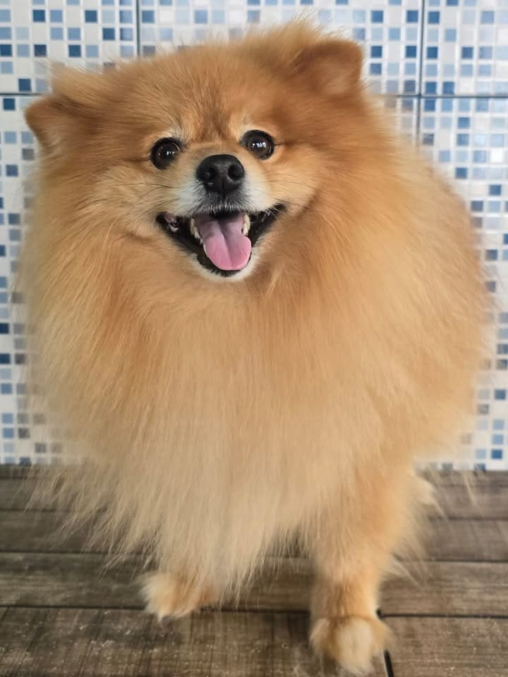
Pet shop no Parque dos Príncipes, SP
Banho e tosa em São Paulo
Seu pet merece o melhor! Há 21 anos cuidando de cães com carinho e profissionalismo, com leva e traz.
60+ avaliações no Google- 21 anos de experiência
- Leva e traz
- Tosa de todas as raças
- Estacionamento no centro comercial
Banho e tosa no Parque dos Príncipes
Da tosa na tesoura à higienização bucal. Escolha e agende pelo WhatsApp.
Banho
Banho com produtos de qualidade e secagem com calma. Volta cheiroso e com o pelo brilhando.
Valor sob consultaAgendar →Tosa na tesoura
Acabamento feito à mão, fio a fio, para um visual macio e natural.
Valor sob consultaAgendar →Tosa na máquina
Pelo mais curto e prático para o dia a dia, no comprimento que você escolher.
Valor sob consultaAgendar →Tosa da raça
O corte que respeita o padrão da raça do seu pet, do Schnauzer ao Poodle.
Valor sob consultaAgendar →Hidratação
Tratamento para o pelo ficar mais macio, brilhante e fácil de escovar.
Valor sob consultaAgendar →Limpeza de ouvido
Limpeza cuidadosa das orelhas, que ajuda a evitar mau cheiro e incômodo.
Valor sob consultaAgendar →Corte de unha
Unhas no tamanho certo para o pet andar com conforto e sem escorregar.
Valor sob consultaAgendar →Higienização bucal
Limpeza dos dentes para um hálito melhor e mais saúde na boca.
Valor sob consultaAgendar →E muito mais
Procura outro cuidado ou tem alguma dúvida? Pergunte pra gente.
Agendamento direto com a nossa equipe pelo WhatsApp
A gente busca e devolve seu pet em casa
Sem correria na sua rotina: buscamos o seu pet em casa, cuidamos dele e devolvemos cheiroso na sua porta.
Consulte pelo WhatsApp se atendemos o seu endereço
Quero o leva e traz- Buscamos em casa
- Banho com carinho
- Devolvemos cheiroso
Príncipes e princesas que passaram por aqui
Pets de verdade, depois do banho e da tosa, e o nosso espaço no centro comercial.
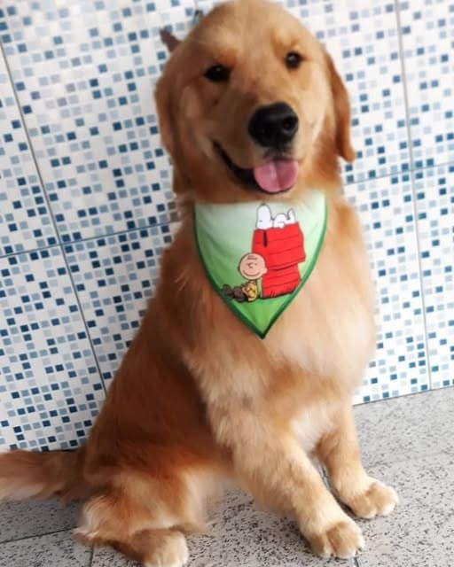
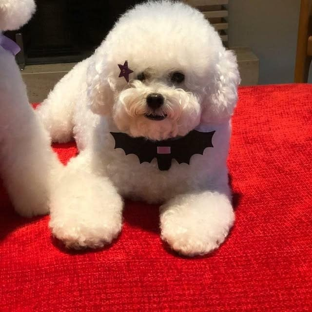
Tosa na tesoura 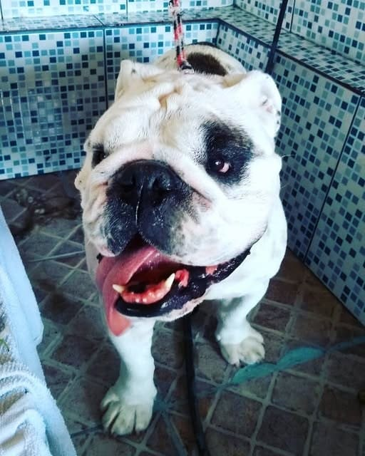
Banho 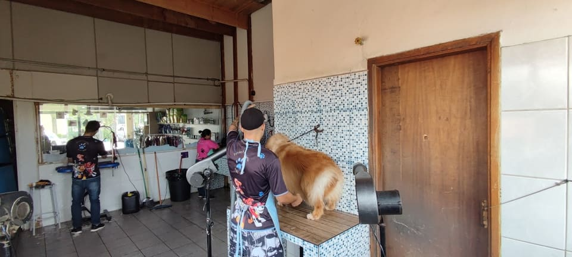
Tosa da raça 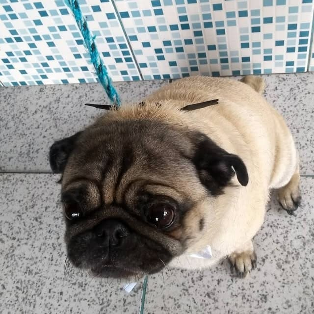
Banho e laço 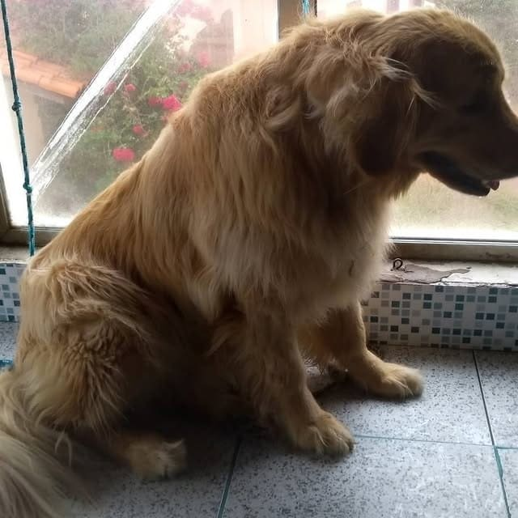
Hidratação 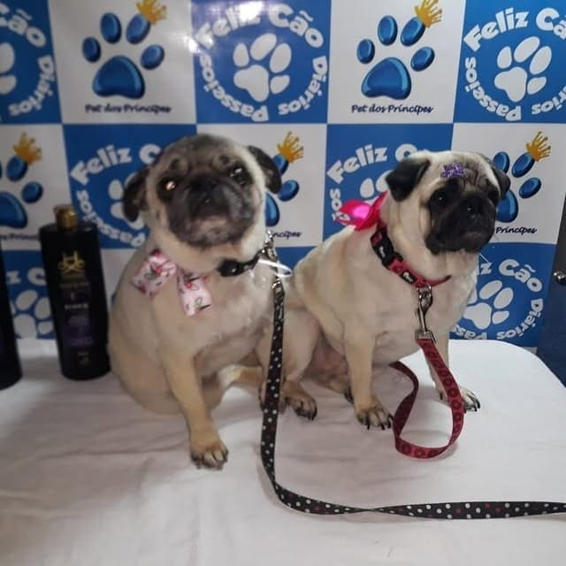
Dupla de pugs 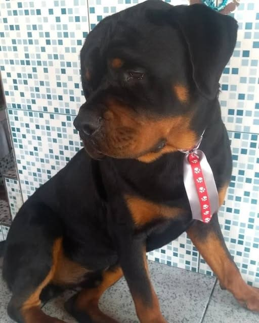
Banho 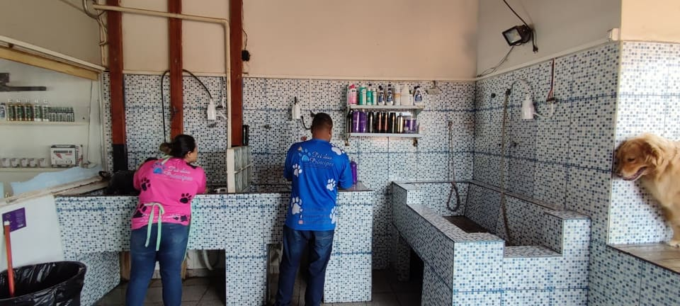
Área de banho 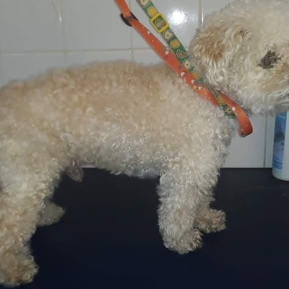
Tosa na máquina 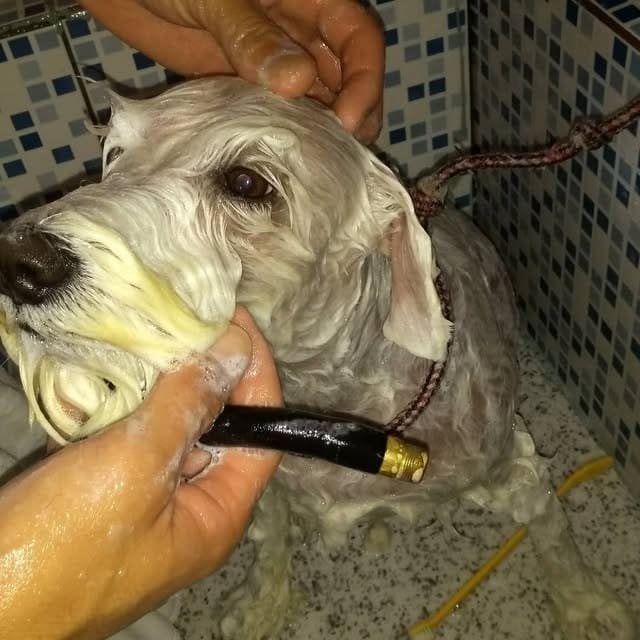
Hora do banho 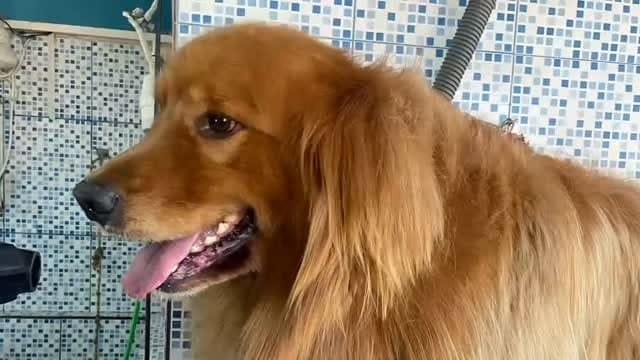
Cheirosinho
Quem traz, volta
60+ avaliações no Google
Trabalho impecável, total atenção e carinho com nossos pets, tenho uma Schnauzer e a tosa da raça é perfeita
Thais G. · no Google
Sou cliente desde 2018, super recomendo, o atendimento é muito bom e ainda levam e trazem meus Pets.
Adair C. · no Google
Amo esse pet, time todo muito atenciosos, carinhosos, equipe dedicada e com muito amor aos nossos pets. E tem excelentes produtos!
Luciane M. · no Google
…Gostei bastante do resultado e mais ainda de ter tela com vidro transparente para podermos ver o banho e a tosa do nosso bebezinho.
Amanda K. · no Google
Atendimento nota mil, pessoal muito educado super atenciosos, banho muito bom !!! Produtos excelentes
Itamar N. · no Google
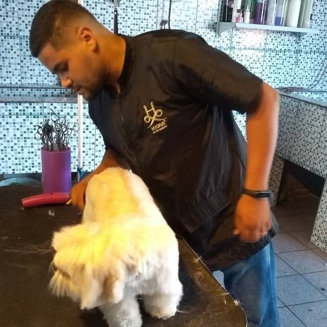
Há 21 anos cuidando de príncipes e princesas
O Pet dos Príncipes se dedica a proporcionar o melhor para os amigos de quatro patas.
Com 21 anos de experiência, construímos uma história de carinho, profissionalismo e excelência no cuidado com os pets, aqui no centro comercial do Parque dos Príncipes.
- 21 anos
- de experiência
- Leva e traz
- busca e entrega
- 9h às 18h
- de segunda a sexta
Como agendar
Chame no WhatsApp
Conte a raça, o porte e o serviço que o seu pet precisa.
Combine dia e horário
A equipe confirma o horário e, se quiser, o leva e traz.
Busque seu príncipe
Ou receba em casa, cheiroso e feliz, no horário combinado.
Agendamento direto com a nossa equipe pelo WhatsApp
Perguntas frequentes
Precisa agendar?
Sim. O atendimento é com hora marcada, para o seu pet não ficar esperando. É só chamar no WhatsApp e escolher o horário.
Quanto custa o banho e a tosa?
O valor muda conforme o porte, o tipo de pelo e o serviço. Mande a raça e o porte no WhatsApp que a gente passa o preço certinho.
Vocês buscam o pet em casa?
Sim, temos leva e traz. Mande o seu endereço no WhatsApp para confirmar o horário de busca e de entrega.
Fazem a tosa da raça?
Fazemos. Além da tosa da raça, tem tosa na tesoura e tosa na máquina, no comprimento que você preferir.
Onde fica e tem estacionamento?
Ficamos na loja C12 do centro comercial da Rua Frederico Bacchin Neto, 140, no Parque dos Príncipes. O centro comercial tem estacionamento.
Pet shop no Parque dos Príncipes em São Paulo
Rua Frederico Bacchin Neto, 140 - Lj C12 – Parque dos PrincipesSão Paulo – SP, CEP 05396-100
Centro Comercial do Parque dos Príncipes
Horários
| Segunda a sexta | 9h às 18h |
|---|---|
| Sábado | 9h às 13h |
| Domingo | Fechado |
Seu pet merece o melhor
Chame no WhatsApp, conte a raça e o porte e garanta o horário do seu príncipe ou princesa.
Agendar pelo WhatsApp